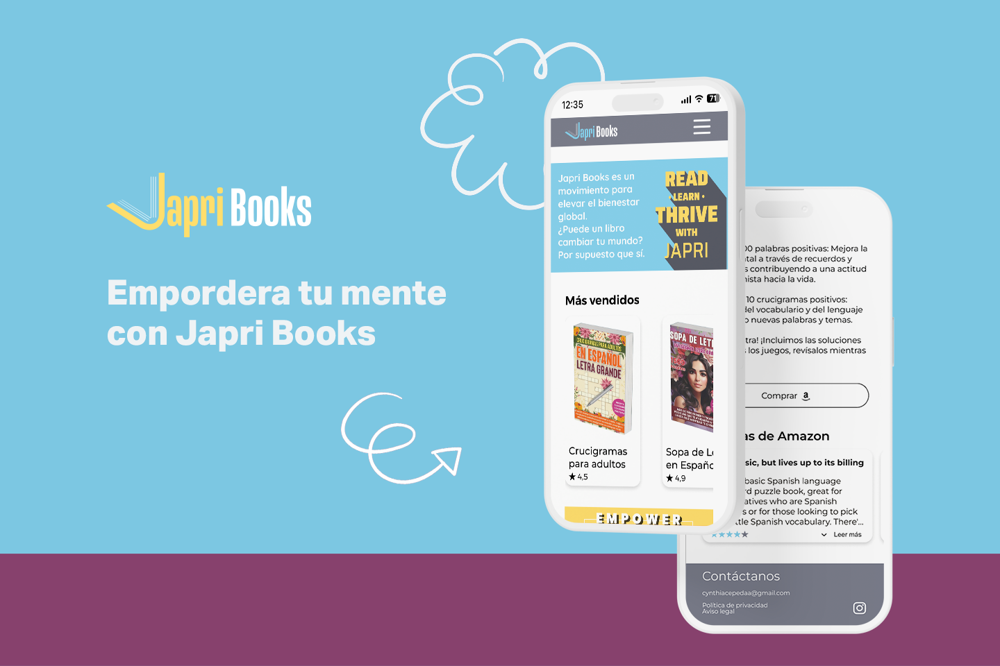

Japri Books
Empower your mind with Japri Books

Japri Books is a social impact publisher crafting non-fiction and activity books—from word searches and coloring to crosswords—designed to elevate mental, emotional, and spiritual well-being.
Product
Japri Books is a social impact publisher bridging non-fiction literature with purpose-driven activity design. By crafting word searches, coloring books, and crosswords focused on mental, emotional, and spiritual well-being, the brand transforms daily activity into a friction-free wellness experience.
Challenge
Designing a high-impact mobile app in a 9-day sprint alongside a cross-functional team of 5—seamlessly integrating features that highlight the brand's social commitment and core values.
Solution
Grounded in user research, we optimized product benefit clarity, aligned user expectations, and embedded high-trust customer reviews—while strategically weaving the brand's social impact throughout the UX flow to reinforce community engagement.